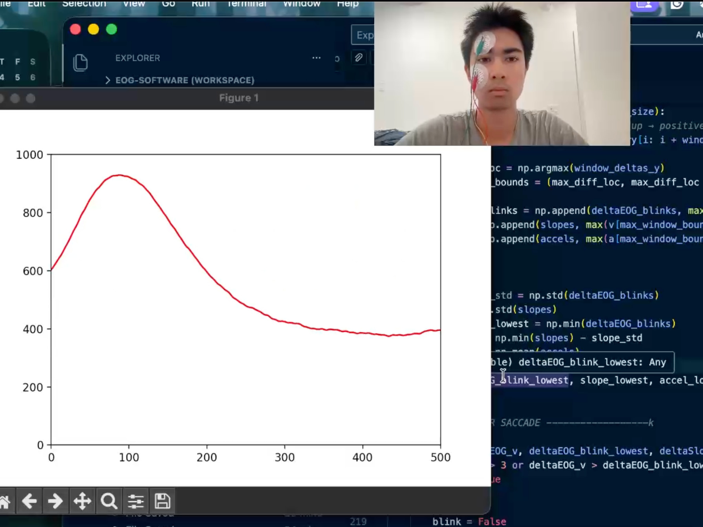
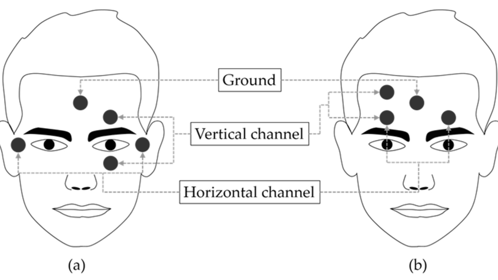
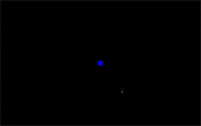
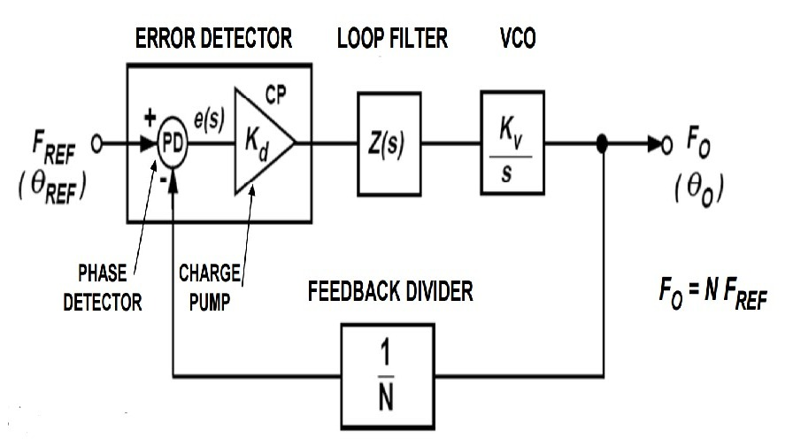

Personal Projects
Things I've built, explored, and created on my own time.
Here's a collection of projects I've worked on outside of class.
Featured Project

Electrooculography-Based Eye Tracking and Blink Detection for Mouse Control
What Is This Project?
What if you could control a mouse using only your eyes? For most, this might simply seem like a cool gimmick; however, for individuals with locked-in syndrome — a type of paralysis in which individuals can only move their eyes — it is a necessity to restore human-computer interaction and communication. Electrooculography (EOG) extracts electrical signals from the eyes during eye movement or blinking, and thus can be used for eye tracking and blink detection.
MethodologyInitial Steps & Approach
My team and I began by integrating eye tracking and blink detection only on the vertical axis. We first determined the optimal electrode placement, which was just above and below the eye. We acquired and filtered the EOG signal using an arduino, biosignal amplifier, and a bandpass filter between 0.1hz and 30hz. We then researched the relationship between the EOG signal magnitude and gaze angle, and found a linear relationship (i.e., the more you move your eyes, the higher the peak is in the signal). Because of this, we could easily run a linear regression on the incoming EOG signal peaks to control cursor movement. Additionally, we found that the peak of the EOG signal for blinks were significantly higher than those for eye movements. Because of this, we could easily apply thresholding to the incoming EOG signal to determing whether it is a blink or eye movement, and then use blinks to control clicks.
Due to individual physiological differences, each user will have slightly different eye movement vs. signal magnitude slope, or blink vs. eye movement thresholds. Because of this, we created calibration programs to tune linear regression models and thresholds. For eye movement calibration, we have users play an eye-tracking game where they press a button on the keyboard to move the next point and follow it with their eyes. The software records the EOG signal in the background during the game and establishes the linear relationship between EOG signal magnitude and the distance between the points once the game is finished. For blink calibration, we simply ask the users to blink several times, while the software records the EOG signal in the background and establishes the average EOG signal peak value once the game is finished.


Where It Stands & Where It's Going
Our current results show reliable blink detection, whereas reliable eye-tracking is more challenging. We have recently updated our algorithm for eye tracking, it is as follows: 1) when the signal is flat (i.e., no eye movement) establish a baseline average value, and an upper bound and lower bound, both symmetrical about the baseline. 2) When the signal is rising, and breaks through the upper bound, watch for where the signal changes direction (inflection point) from rising to decreasing. This point is the peak value of the signal. 3) Compare this peak value to the baseline (subtract the two), and use the linear regression to determine the corresponding movement of the mouse.
Next steps include fine tuning certain parameters in the real-time algorithm, and implementing it for the horizontal axis as well. Additionally, collaboration will increase between the mechanical subteam, who are designing a wearable glasses form factor for the electrodes, and electrical subteams, who are designing a custom PCB with enhanced amplification and signal filtering.

Designing and Implementing a Feedback Divider for a Phase-Locked-Loop
What Is This Project?
As part of the Analog Mixed-Signal design team in SiliconJackets, we aim to create modules for ASICs, one of them being a Phase-Locked-Loop (PLL). PLL's are very important for clock multiplication, signal synchronization and reducing noise from a clock signal. My project is designing the feedback divider component of the PLL, which will later be implemented with the other components that my teammates are designing to create the full PLL.
Results & ProgressWhere It Stands & Where It's Going
Familiarizing myself with the dual modulus prescaler, working on implementing it in Cadence Virtuoso.
Heated Racquet Handle/Grip for Cold Weather Outdoor Play
What Is This Project?
As an avid tennis player, one of the biggest challenges for recreational players is playing outdoors in the winter. It is nearly impossible to play well when your hands are very cold as you lose feeling of connection to the ball, and the racquet will slip out of your hands quite often. Simply wearing gloves is not feasible, as it is not possible to grip the racquet tightly and correctly, and disposable hand warmers can only warm your hands in between points, and their heating effects quickly dissipate. An entirely new handle could be designed with integrated heating capabilities, but the racquet market is dominated by a select few companies, who intentionally make customization of the frame and handle extremely difficult and labor intensive. I have created a first-of-its-kind electric modular racquet grip heating system that provides continuous heat to the users hands. My system works with any modern tennis racquet from the major racquet brands, and could even be applied to many other sports as well in the future. Throughout the process I have learned basic circuit analysis, PCB Design, and power management.
Results & ProgressWhere It Stands & Where It's Going
Many of the design choices were constrained by physical space, such as the limited amount of space to place the batteries, PCB, and heating unit. Exact design choices and specifications for the heating unit are private at the moment. This section will be updated when it is fully finished or sold as a product. I used KiCAD to design a simple PCB connecting the heating unit to batteries, a switch, a charging unit, and the heating unit. Additionally, I had it manufactured through JLCPCB and have validated it myself. Next steps include creating a casing for the pcb, further improving space efficiency, and receiving feedback from other recreational tennis players and product managers.